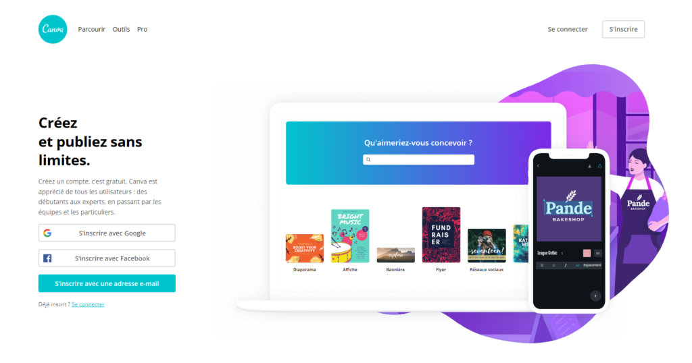

Publié le 24 Avril 2020
Posséder un avion ne fait pas de vous un pilote. Diriger une équipe sportive ne fait pas de vous un athlète. Et avoir des outils comme Adobe Photoshop ou Illustrator ne fait pas de vous un artiste.
Même avec l'aide de ces applications de haut calibre, il faut une formation et beaucoup d'expérience pour produire une annonce de qualité professionnelle ou une conception de produit ou même une excellente image de médias sociaux. Alors que les entreprises non essentielles ferment à gauche et à droite pour un avenir indéfini, tout le monde - des petits commerçants aux restaurateurs - cherche des moyens d'étendre sa présence en ligne. Les médias sociaux sont plus importants que jamais si vous ne voulez pas être complètement oublié quand tout est fini.
Que vous cherchiez à créer une affiche, un logo d'entreprise, du matériel promotionnel ou de l'art pour accompagner la publicité numérique ou les publications sur les réseaux sociaux sur n'importe quelle plateforme, Canva peut vous y emmener à mi-chemin en quelques instants.
Canva est une plate-forme de conception graphique qui permet aux utilisateurs de créer des graphiques de médias sociaux , des présentations , des affiches et d'autres contenus visuels. Il est disponible sur le Web et sur mobile et intègre des millions d'images, de polices, de modèles et d'illustrations.
Peu importe ce que vous créez, Canva propose plus de 60 000 modèles de conception répartis en dizaines de catégories différentes pour vous aider à démarrer. Qu'il s'agisse d'une petite image de publication Facebook ou de graphiques publicitaires prêts pour une pancarte de bus, Canva a des tailles et des styles pour répondre à tous les besoins.
Vous pouvez choisir parmi de nombreux modèles conçus par des professionnels, modifier les conceptions et télécharger vos propres photos via une interface glisser-déposer . Vous pouvez également payer pour que les produits physiques soient imprimés et expédiés.
La société a été fondée le 1er janvier 2012 à Sydney , en Australie, par Melanie Perkins , Cliff Obrecht et Cameron Adams. Au cours de sa première année, Canva comptait plus de 750 000 utilisateurs. Spécialiste des médias sociaux et de la technologie, a rejoint l'entreprise en tant qu'évangéliste en chef en avril 2014. En 2015, Canva for Work a été lancé, ce qui a donné aux entreprises un outil pour produire des supports marketing.
Les applications Canva offrent aux utilisateurs la possibilité de rationaliser leurs flux de travail grâce à l'accès à du contenu supplémentaire, et à des outils d'édition et de publication, tels que Google Drive, Dropbox, PhotoMosh et Instagram.
Éliminez les tracas liés à la coordination de plusieurs présentations. Faites simplement glisser les présentations dans un dossier et cliquez sur "Présenter" pour les lire toutes dans l'ordre. Les changements de dernière minute fonctionnent et chaque présentation est introduite avec de belles diapositives d'introduction personnalisées. Un peu de pratique.
Vous pouvez désormais ajouter de la musique gratuite à certains types de conception sur Canva.
Les stickers animés sont parfaits pour donner une bouffée d’air frais à votre design et le rendre plus amusant ! Maintenant offerts sur Canva pour le Web et iOS, et bientôt à venir sur Android.
Créez maintenant, publiez plus tard. Avec le Planning Canva, gardez le contrôle de votre présence sur les réseaux sociaux tout en libérant du temps pour vous consacrer à d'autres tâches. Planifiez l'heure à laquelle vous publiez vos messages, des jours ou des semaines à l'avance — le Planning Canva les publie automatiquement conformément au programme que vous avez défini. Publiez sur Facebook, Twitter, Pinterest et Linkedin, et plus encore prochainement.
Canva présente Canva pour l’enseignement version Bêta pour des écoles en Australie. Canva pour l’enseignement est un produit entièrement gratuit et adapté spécialement aux exigences de chaque salle de classe.
Elle permet aux grandes entreprises d’optimiser le marketing de leur marque et le contenu interne grâce à l’outil de design intégré personnalisable.
Vous avez terminé votre présentation, les applaudissements s'estompent enfin (le public était vraiment en effervescence !) et maintenant, tout ce qu'il vous reste, ce sont des souvenirs et un diaporama que vous avez mis des heures et des heures à créer. Si seulement vous pouviez le réutiliser. Eh bien c'est possible : sous forme de site internet. Grâce à Canva, transformez vos diaporamas en fabuleux sites web interactifs.
Vous avez toujours rêvé de faire une petite danse en plein milieu d'une présentation ? Les rêves peuvent devenir réalité. Rendez vos designs aussi interactifs que possible : intégrez à présent vos vidéos YouTube, GIF, Tweets, publications Facebook et morceaux Spotify (pour n'en citer que quelques-uns) à vos présentations et sites internet. Préparez-vous à faire un boogie-woogie !
La magie de Canva appliqué aux sites internet — à présent, créez votre propre site internet en quelques clics seulement. C'est aussi facile que de commander une pizza et de vous la faire livrer à domicile, sauf que le livreur ne vous verra jamais en pyjama. Avec 100 modèles exceptionnels et 4 styles de navigation fluides, nous vous offrons un menu encore meilleur que celui de votre pizzeria préférée.
Appelez Hollywood, un nouveau réalisateur est en ville ! Grâce à l'animateur de Canva, transformez vos designs instantanément en animations et en vidéos. Nous vous proposons de choisir parmi 6 styles d'animation inventifs différents. Téléchargez votre vidéo en tant que GIF ou fichier vidéo à partager sur vos réseaux sociaux préférés, intégrez-la à un site internet ou partagez-la avec vos proches. Action !
Canva 2.0 est là pour vous aider dans plus de 100 langues : d'un patois espagnol couramment utilisé à une langue indigène parlée uniquement dans certaines régions du monde, comme l'aymara et le k'iche'. L'une de nos langues, le corse, est parlée par 150 000 natifs uniquement — et provient d'une petite île méditerranéenne au large de la France.
1. Ouvrez l'application Canva et connectez-vous ou inscrivez-vous pour accéder au site Web.
2. Là, les utilisateurs doivent taper les modèles Zoom Virtual Background et sélectionner parmi une gamme de modèles, spécialement conçus pour Zoom.
3. Les utilisateurs peuvent personnaliser la conception en changeant la couleur de l'arrière-plan, en ajoutant des textes et plus encore.
4. Les utilisateurs doivent ensuite télécharger le fichier au format PNG ou MP4.
5. Il faut aller sur le site Zoom et cliquer sur le menu Paramètres.
6. Dans le menu, les utilisateurs doivent rechercher l'option Arrière-plans virtuels et cliquer sur Ajouter une image.
7. Sélectionnez l'image que vous avez téléchargée depuis Canva et votre arrière-plan sera remplacé par l'image sélectionnée.
Utilisation très simple, surtout pour les débutants.
Une offre gratuite avec plus de 1 Go de stockage, l’accès à 8 000 modèles.
Exporter sous plusieurs formats : PDF, JPEG, PNG…
Le prix attractif de l’offre payante PRO.
La banque d’images très riche.
S’adapte à tous vos projets.
Application mobile Canva
Fonctionnalités et éléments limités en version gratuite.
Le service client difficile à contacter, en cas de problème.
Pas de version offline, impossible de travailler en local.
Il suffit de prendre quelques minutes pour parcourir les nombreuses fonctionnalités pour se rendre compte du potentiel énorme que représente ce logiciel de création. Sa facilité de prise en main est incroyable, notamment grâce à l’outil de conception « glisser-déposer », qui améliore grandement l’expérience utilisateur. Les adeptes de designs simples et accrocheurs ainsi que toutes les personnes non-initiées à l’utilisation d’outils graphiques seront plus que ravis.
Conçu par Michel